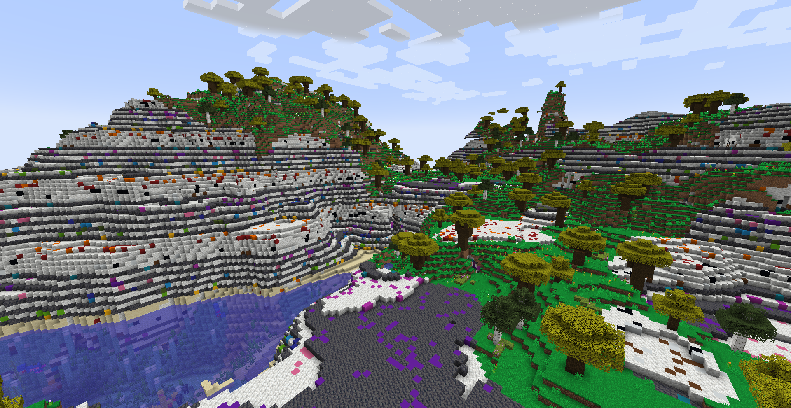
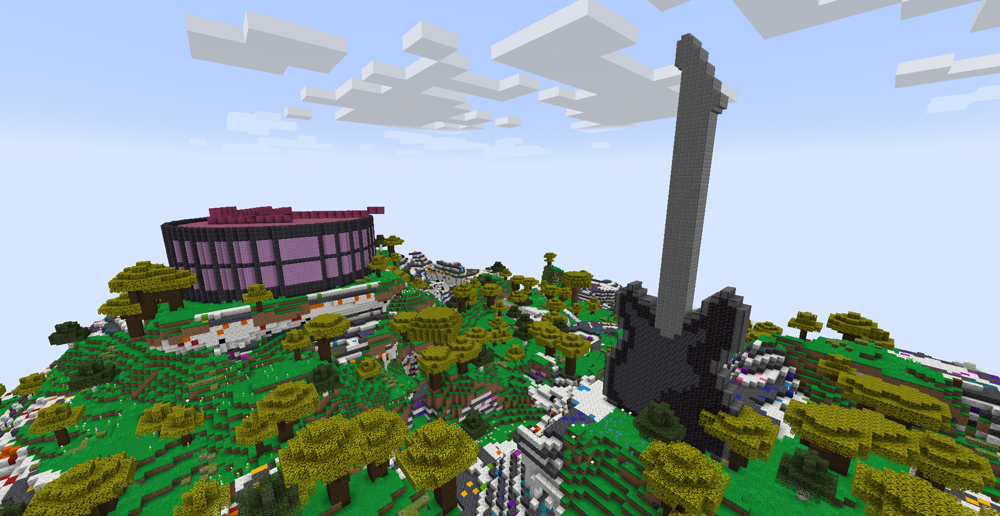
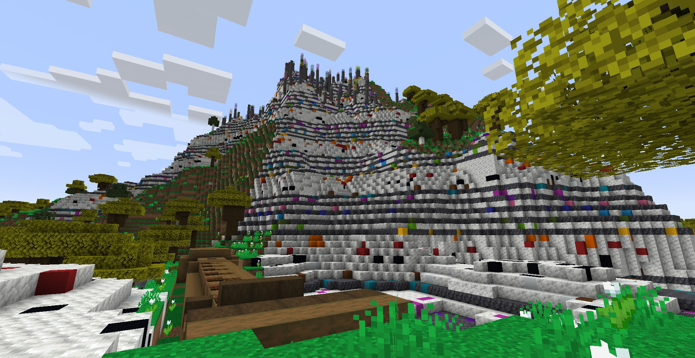
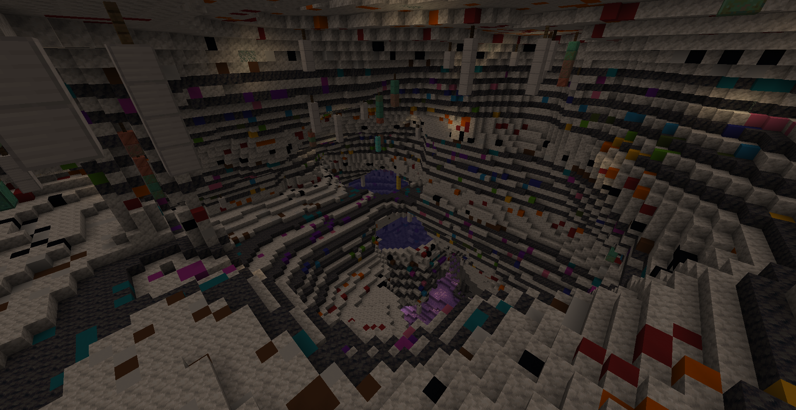
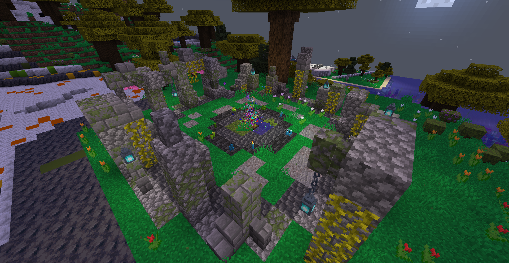

Otherside
Lore
It’s the place where Melomanians come from. A peaceful world filled with music. Thanks to Otherside disc Melomanians were able to visit the Overworld. You are one of them and probably the last. You entered the Overworld through a portal but due to a dramatic accident all of your discs were destroyed, including Otherside. Now you’re stuck int the Overworld. However there’s hope for you to return to your home. Your ancestors left many discs here, in Overworld. If you find the key to your home, you’ll be saved.
Description
Otherside is a peculiar place. It’s devoted to music, so everything what you find there is related to melody. Mountains and cliffs with staffs on their sides and magical colorful notes, which play nice tunes when gathered. There are bells hanging from the tallest oak trees. In caves you can find lots of amethyst, crystals and wind bells made of iron, copper, gold and rarely diamond and even netherite (these are really hard to find). There are noteblocks in some places. They can be avctivated if you walk close to them, as underneath them sculk sensors are located. In the high mountains you can find pilars made out of cobbled deepslate and tinted glass. They represent the highest tones. Melomanians constructed many buildings and monuments in honour of music. You’ll encounter huge monuments of instruments, an amphitheatre in shape of drums, a pyramid with synthesizers on top and worship places which lead you to the Overworld.
   {kind=link}
{kind=link}
{kind=link}
{kind=link}
How to open portals?
If you’ll be lucky enough and find one of worship places, you’ll be able to open a portal to Overworld. The only thing you need to do is play Otherside disc in the jukebox in the middle. Before You get your disc back from the walkman you need to stay inside the circle marked out by stone pillars. The place of worship is a sanctuary, which doesn’t allow you to return to Overworld when Otherside disc stops playing. After you get this disc, put it inside the jukebox.
{kind=link}
Important! As Melomanian you can’t walk through the portal when you have any disc playing in your walkman and when a bar with an hourglass is active.
Thanks to WafflesAreBetter for great tutorials on how to create custom dimensions. They taught me a lot about how the custom world generation in Minecraft works.
Link to WafflesAreBetter’s YouTube channel: https://www.youtube.com/c/WafflesAreBetter